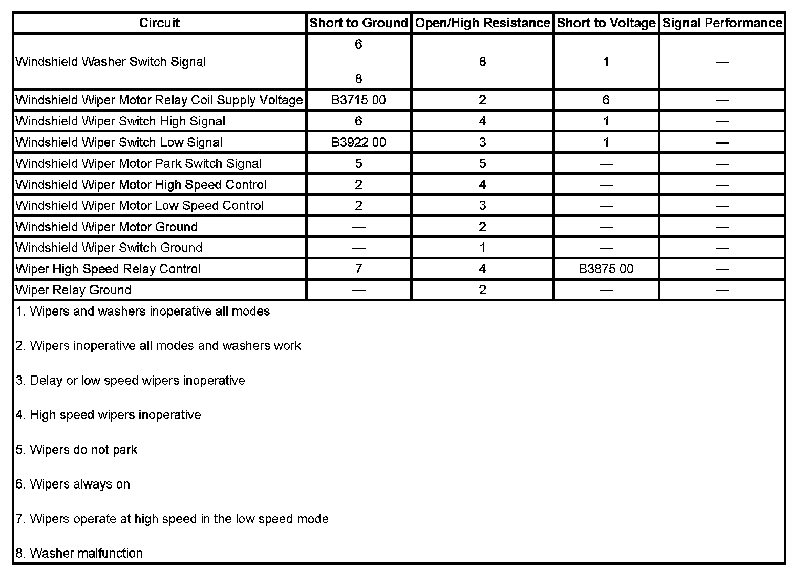

B3875
DTC B3875
DTC DESCRIPTOR
DTC B3875 00
Wiper High Speed Relay Circuit
DIAGNOSTIC FAULT INFORMATION

Perform the Diagnostic System Check - Vehicle prior to using this diagnostic procedure. Initial Inspection and Diagnostic Overview
CIRCUIT/SYSTEM DESCRIPTION
The body control module (BCM) monitors the wiper high speed relay control circuit only when wiper high speed mode is active. When the wiper high speed mode is requested, the BCM responds by applying a ground through the wiper high speed relay control circuit to the coil side of the relay, energizing the WPR HI Relay.
CONDITIONS FOR RUNNING THE DTC
This DTC can set only when the output is actively being requested by the BCM.
CONDITIONS FOR SETTING THE DTC
This DTC sets if the BCM detects a short to battery voltage on the wiper high speed relay control circuit.
ACTION TAKEN WHEN THE DTC SETS
The BCM will not activate the output.
CONDITIONS FOR CLEARING THE DTC
- The current DTC will become history when the request for the output is removed or when the condition for setting the fault is corrected.
- The history DTC will clear after 50 consecutive ignition cycles without a fault present.
CIRCUIT/SYSTEM TESTING
1. Ignition OFF, disconnect the C4 harness connector at the underhood fuse block.
2. Connect a test lamp between the control circuit terminal A3 and battery voltage.
3. Command the Wiper High Speed Relay ON and OFF with a scan tool. The test lamp should turn ON and OFF when changing between the commanded states.
- If the test lamp is always ON, test the control circuit for a short to ground. If the circuit tests normal, replace the body control module.
- If the test lamp is always OFF, test the control circuit for a short to voltage or an open/high resistance. If the circuit tests normal, replace the body control module.
4. If all circuits test normal, replace the underhood fuse block.
REPAIR INSTRUCTIONS
Perform the Diagnostic Repair Verification after completing the diagnostic procedure.
- Underhood Electrical Center or Junction Block Replacement
- Control Module References for BCM replacement, setup, and programming. Verification Tests Programming and Relearning